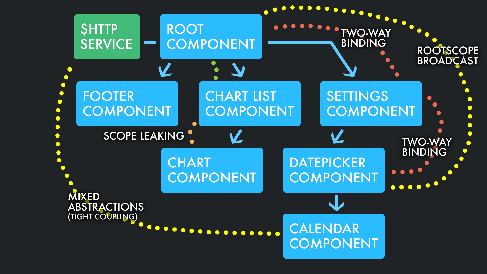

Angular.JS

Basic Introduction
You can find this presentation here:
https://github.com/nagyadam2092/AngularJS-presentation-Frankfurt
or here:
http://nagyadam2092.github.io/work/angularjs_presentation/angular_basics/#/
Why Angular?
“HTML is great for declaring static documents, but it falters when we try to use it for declaring dynamic views in web-applications. AngularJS lets you extend HTML vocabulary for your application. The resulting environment is extraordinarily expressive, readable, and quick to develop.”
History
- 2009 - Misko Hevery
- originally for designers
- Angular2 - still in RC (2016-06)
Motivation
See the Pen Angular minimalistic minesweeper by Adam Nagy (@nagyadam2092) on CodePen.
Modules
Why to use modules?
- polluting the global namespace is a (very) bad practice
- use independent, easily pluggable/unpluggable elements instead: modules
Modules #2
Why are modules good?
- no global namespace pollution
- easier to test
- code sharing made easier
- angular modules via
angular.modulefunction
Scopes in angular
The scopes of the application refer to the application model.
- scopes are the execution context for expressions
- $scope object → business functionality
- arranged in a hierarchical structure - can reference on properties on parent scopes
- If it sounds familiar it's not a coincidence ...
prototype
Scopes in angular #2
- $rootScope (ng-app) → JS global scope
- scopes are plain old JS objects (
...POJSO??) - $scopes are ‘public’ in a sense of it is automatically accessible from the view
Scope object lifecycle
- creation (automatically)
- linking: scope variables are linked / attached to the view ($watch)
- updating: if any change is detected, scope object will fire the watch callback function
- destruction: if a scope is not needed, will be destroyed automatically
Directive scopes
Usually directives do not care about scopes, but there are some special directives, like ng-controller and ng-repeat, which create their own scopes.
Controllers
The controller in AngularJS is a function that adds additional functionality to the scope of the view
initial state + add custom behavior to the scope object.
new controller → new $scope.
Our first controller!
See the Pen Basic angular controller by Adam Nagy (@nagyadam2092) on CodePen.
More controllers!
define slim controllers!
use services for complex logic
Controller hierarchy:
local scope → parent scope → .. → $rootScope
Code example!
See the Pen Basic angular controller by Adam Nagy (@nagyadam2092) on CodePen.
{{ Expressions }}
- expressions are very similar to
eval(javascript) - using
{{ }}in HTML - executed on scope and have access to local
$scopevariable - no errors are thrown
- no control flow function like if-else
- can accept filter and/or filter chains
Filters
- provides a way to format data we display to the user
- JS: $filter service
- HTML: | (pipe)
See the Pen Angular basic filter by Adam Nagy (@nagyadam2092) on CodePen.
Built-in filters
-
currency
-
{{ 123 | currency }}
-
-
date
-
{{ today | date:'shortTime' }}
-
-
filter- filterception
- selects a subset of items from an array
-
{{ ['Adam', 'Nagy', 'Lufthansa', 'Systems'] | filter:'n' }} - returns
['Nagy', 'Lufthansa']
- and many-many more (uppercase, lowercase, orderBy, etc...)
Creating our first own filter!
call filter function in Angular module
See the Pen Angular basic custom filter by Adam Nagy (@nagyadam2092) on CodePen.
Directives
- custom html elements and attributes
- probably the most important feature of Angular
- e.g. a button is the same, but "native"
Our first directive
See the Pen Angular our first directive by Adam Nagy (@nagyadam2092) on CodePen.
Directives!
A directive can be
- element (E)
- attribute (A)
- class (C)
- comment (M)
- or combined (EAC)
Passing data into a Directive
See the Pen Angular passing data to directives by Adam Nagy (@nagyadam2092) on CodePen.
using scope at the directive definition object we are declaring an isolated
scope
the directive gets its own $scope object, which we can only use inside
other methods/expressions of the directive
Basic ng attribute directives
pre-built directives developed by the Angular team
-
ng-href -
ng-class -
ng-style -
ng-src -
ng-disabled -
ng-checked -
ng-readonly -
ng-selected
Built-in directives - with child scope
pre-built directives developed by the Angular team
-
ng-app -
ng-controller -
ng-if -
ng-click -
ng-model -
ng-repeat -
ng-init -
ng-show -
ng-bind -
ng-view -
ng-include -
ng-cloak -
ng-bond-template - ... TODO just the most used ones here
ng-repeat
one of the most used built-in directive
See the Pen Angular basic ng-repeat by Adam Nagy (@nagyadam2092) on CodePen.
Dig deeper with directives
The simplest way to think about a directive is that it is simply a function that we run on a particular DOM element.
Thedirective function provides extra functionality.
angular.module('myApp')
.directive('myDirective',
function($timeout, UserDefinedService) {
// directive definition goes here
});The directive method takes two arguments:
name and factory function
Directive definition
angular.module('myApp', [])
.directive('myDirective', function() {
return {
restrict: String,
priority: Number,
terminal: Boolean,
template: String or Template Function: function(tElement, tAttrs)(...
},
templateUrl: String,
replace: Boolean or String,
scope: Boolean or Object,
transclude: Boolean,
controller: String or
function(scope, element, attrs, transclude, otherInjectables) {...
},
controllerAs: String,
require: String,
link: function(scope, iElement, iAttrs) {...
},
compile: // return an Object OR the link function
// as in below:
function(tElement, tAttrs, transclude) {
return {
pre: function(scope, iElement, iAttrs, controller) {...
},
post: function(scope, iElement, iAttrs, controller) {...
}
}
// or
return function postLink(...) {...
}
}
};restrict
EA(by default)CM
template(Url)
HTML template for our directive
replace
if set to true replaces original DOM element
Directive Scopes
- every directive invoked within the DOM will:
- direclty use e.g. the same $rootScope object
- create a new object that inherits from this object
- create an object that is isolated from the object
we can manipulate through the scope object in the directive definition object
scope options (boolean|object)
it's an optional parameter
by default it's false, if set to true, creates a new scope, which prototypically inherits from it's parent scope
See the Pen Angular directive scopes by Adam Nagy (@nagyadam2092) on CodePen.
Isolated scope
one of the most important/used feature in Angular
a separated scope for directives
to be able to create reusable components (directives)
without polluting the scope around them
or having their scope corrupted inadvertently
See the Pen Angular directive isolated scopes by Adam Nagy (@nagyadam2092) on CodePen.
Another example for inherited / isolated scope
See the Pen Angular directive inherited / isolated scopes by Adam Nagy (@nagyadam2092) on CodePen.
Binding strategies
Angular gives us the way to bind data from outside the scope to the directive's scope
different strategies for binding:
@: by value (evaluated by Angular)=: two-way data binding (or some would call itbi-directionaldata-binding)&: call an expression on the parent scope from the isolated scope<: (>1.5) one-way binding
Two-way data binding
Probably the most used / known feature in Angular
to bind the value of a property inside the private scope of our directive to the value of an attributeavailable within the DOM
Other directive parameters
press your down arrow, Adam ;)
controller
the directive's controller
could reach services like $scope, $element, etc..
controllerAs
define the name of the controller
angular.module('myApp'), [])
.directive('myDirective', function() {
return {
restrict: 'A',
template: '{{ $ctrl.msg }}',
controllerAs: '$ctrl',
controller: function() {
this.msg = 'Hello world!'
}
}
});
require
to require controllers of other directives
AngularJS Life Cycle

Link vs Controller (best practices)
- link: use to register callbacks / DOM manipulation
- controller: sort of an API: used when another directive needs to interact with this directive
However, you can put methods, $watches, etc. into either the directive's controller or link function, the controller will run first
Angular module loading
configuration block: configure a module before it starts to run
angular.module('myApp', [])
.config(function($routeProvider){
});Angular module loading - run blocks
like config block - the difference is it's executed after the module was started
Dependency Injection
design pattern: allows for the removal of hard-coded dependencies, thus making it possible to remove or change them at runtime
really ideal for testing!
angular.module('myApp', [])
.factory(function('greeter', function() {
return {
greet: function(msg) {
console.log(msg);
}
}
})
.controller('MyController', function($scope, greeter) {
$scope.sayHello = function() {
greeter.greet('HelloBello!');
};
});Dependency Injection - what could go wrong?
Let's look at the code we saw
what could possibly go wrong?
MINIFICATION
Dependency Injection - a solution to minification
var ctrl = angular.module('myApp')
.controller('MyController', function(aVeryDifferentNameThanScope){
// can reach $scope via aVeryDifferentNameThanScope object
});
ctrl.$inject = ['$scope'];Services
a method to keep data around the app to communicate across controllers in a consistent manner
singleton objects
Services - example
app.service('hexafy', function() {
this.myFunc = function (x) {
return x.toString(16);
}
});this service can be injected anywhere inside the app
Section - example #2
See the Pen Angular service example by Adam Nagy (@nagyadam2092) on CodePen.
The $digest loop and apply
$watch list: list of variables which are bound to the view
dirty checking: a very basic concept, which checks values whether they had been synchronized across the app or not
worth mentioning: this strategy is also used in game engines, db engines, Object Relational Mappers, etc..
Dirty checking
the method
- iteration through the watch list
- check whether a value is dirty
- if it's dirty assign the new value
- if there were any assignments re-run the method
why does dirty checking need re-running?
if there is a value which has to be changed, it may change other values as well
so dirty checking has to re-run
fun fact: after 10 iteration Angular will throw an error (possible infinite loop)
fun fact #2: the number 10 can be changed :)
$watch
watchers could be set to detect changes in the view/model
See the Pen Angular $watch by Adam Nagy (@nagyadam2092) on CodePen.
jQuery and $apply
See the Pen Angular, jQuery and $apply by Adam Nagy (@nagyadam2092) on CodePen.

Folder structure - bad way
app/
----- controllers/
---------- mainController.js
---------- otherController.js
----- directives/
---------- mainDirective.js
---------- otherDirective.js
----- services/
---------- userService.js
---------- itemService.js
----- js/
---------- bootstrap.js
---------- jquery.js
----- app.js
views/
----- mainView.html
----- otherView.html
----- index.htmlFolder structure - best practice
app/
----- shared/ // acts as reusable components or partials of our site
---------- sidebar/
--------------- sidebarDirective.js
--------------- sidebarView.html
---------- article/
--------------- articleDirective.js
--------------- articleView.html
----- components/ // each component is treated as a mini Angular app
---------- home/
--------------- homeController.js
--------------- homeService.js
--------------- homeView.html
---------- blog/
--------------- blogController.js
--------------- blogService.js
--------------- blogView.html
----- app.module.js
----- app.routes.js
assets/
----- img/ // Images and icons for your app
----- css/ // All styles and style related files (SCSS or LESS files)
----- js/ // JavaScript files written for your app that are not for angular
----- libs/ // Third-party libraries such as jQuery, Moment, Underscore, etc.
index.html
Minification
- to make the network dataflow as less as possible
- only in production!
Bad practice
Credit: Emarsys
Best practice
uni-directional data-flow

Credit: Emarsys
Documentation
/**
* MyDirective directive
*
* @memberof MyModule
* @ngdoc directive
* @name MyDirective
*/Linting
Linting is a process where our source code will be analyzed
set of (custom) rules
recommended to use
SASS
slight off-topic
to make development in CSS easier
set of extensions to the original css rules
Mock-server
to be able to test your application without changing the original environment
great example: https://github.com/tombenke/rest-tool